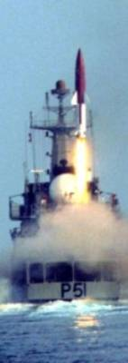
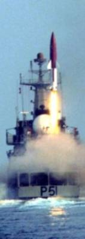

|
India's liquid-propellant
SRBM "Prithvi"
Norbert Brügge, Germany
Update: 25.07.2011
|

|
Prithvi-I
(SS-150)
The Prithvi-I is a short-range, road-mobile, liquid-propellant ballistic missile.
India developed the missile with assistance. The motor and the guidance system
are based on the Soviet surface-to-air missile (SAM) product line. They were
already components of the canceled Indian SAM "Devil"program.
|
Project “Devil”
The “Devil” missile was developed by India in the 1970s. The goal of Project
“Devil” was to produce a short-range surface-to-air missile through reverse
engineering of a Soviet Union high-altitude, command guided, surface-to-air
missile.
The project was overseen by the Defense Research & Development Laboratory
(DRDL) of India. The model for Project “Devil” was the SA-2 Guideline, a
Soviet Union missile which the DLDR intended to reverse engineer.
Project “Devil” was officially launched in January 1972. DLDR subcontracted
some of its labor, hiring the Hindustan Aeronautics Limited and Bharat Heavy
Plates & Vessels Limited to cast a 350kg magnesium liquid-fuel engine frame
and a solid-booster respectively.
In January 1975, the Indian Space Research Organisation was appointed to
run an external review of Project “Devil” and in March 1975 found it had
been successful in several areas, if not in liquid propulsion, and should
be permitted to continue. It ran for several more years before being completely
discontinued in 1980, by which point DRDL had produced several components
for Devil, including a solid rocket booster with high-strength steel casings
and a specific impulse of 200 seconds, and a second stage three-ton liquid-propellant
engine, fueled by TG-fuel (a combination of Xylidiene and Tri-ethylamine),
oxidized by inhibited red-fuming Nitric Acid and Di-nitrogen Tetroxide.
The Devil components were later subsequently modified and utilized as components
in other systems, for example for the Prithvi missile developed in the 1980s.

|
India began developing the Prithvi-I in 1983. The missile is 8.5 m long, 1.1
m in diameter. Its body is made from aluminum alloy and its wings are made
from magnesium. There are four clipped-tip delta wings at mid-body and four
small aerodynamic control fins at the rear.
|
Prithvi is a single-stage missile with a liquid-propellant engine,
made by the Soviet KB Isayev (derivative of S2.711V
engine). It used two motors side-by-side that provide aerodynamic control as
well as thrust vectoring. The thrust (app. 2x 35 kN) enabling a variable
total impulse to be programmed for different payload and range requirements.
The rocket-propellant is most likely TG-02/AK-20F, according to the
origin of the engine. The missile has a maximum range of 150 km.
The Prithvi-I first test flight was in 1988 and it officially entered service
in 1994.
Prithvi-II (SS-250)
The Prithvi-II is similar to the Prithvi-I in many ways, However, with extended
tanks for more fuel.
India first tested the Prithvi-II in 1996. In its current configuration, the
missile is 9.4 m long and 1.1 m in diameter, and weighs 4,500 kg. It uses the
same two liquid-propellant engines as the Prithvi-I, however an improved liquid-propellant
(TG-02/AK-27I ?) over its predecessor. The engine control allows the
missile to stop climbing when it reaches an altitude of 30 km, travel horizontally
at this altitude, and dive on its target at an 80° angle.
In 2002 management of the Prithvi-II was shifted from the Indian Air Force
to the Indian Army and also to the Indian Navy. The naval variant is called
"Dhanush". The missile has a maximum range of 250 km. Development tests
on the Prithvi-II began in 1992. Regular production began around 2002.
|
| Prithvi-I |
|

|

Prithvi warheads
|
|

|

|
| Prithvi-II |
|

|

|

|

|
|

|

|

|

|
|

Single engine (Typ Isayev)
|

View into the engine bay
|
|

Engine bay

|

Core stage upper part
|
|

|
|
Prithvi-II as Air Defence (AD)
target vehicle |
Currently, the “Defence Research and Development Organisation” (DRDO)
developing for India an Air Defense System, based on two different interceptor
missiles:Prithvi
Air Defense interceptor (PAD)
Advanced Air Defense interceptor (AAD
The Prithvi-II SRBM is used as target-object
for the tests (ground based vehicles called TGT). The naval target version
is called "Dhanush"
|
|
 

Dhanush (-04 and -05)
|

TGT-01
|

TGT-04
|

TGT-05
|
| Prithvi Air Defense (PAD/PADM) interceptor |
The
Prithvi Air Defence (PAD) is an anti-ballistic missile developed to intercept
incoming ballistic missiles outside of the atmosphere (exo-atmospheric). Based
on the Prithvi missile, PAD is a two stage missile with a maximum interception
altitude of 80 km. The missile is 10.0 m long, 1.1 m in diameter, and weighs
4,958 kg.
The first stage is a liquid fuelled motor while the second stage is solid fuelled.
It has maneuver gas-thrusters which can generate a lateral acceleration. Guidance
is provided by an intertial navigation system with mid-course updates from
LRTR and active radar homing in the terminal phase. PAD has capability to engage
the 300 to 2,000 km class of ballistic missiles at a speed of Mach 5.
The advanced interceptor PADM weighs 5,200 kg and is armed with a "kill
vehicle" which is equipped with a innovative system to allow the missile to
maneuver. The "kill vehicle" has additional a small solid fuelled motor.

PAD
gimbal-controlled
solid fuel motor
| Date |
Interceptor |
Launch site |
Prithvi Target |
Launch site |
| 27.11.2006 |
PAD-01 |
Wheeler Isl.
|
TGT-01 |
Chandipur
T.R. |
| 06.12.2007 |
PAD-02 |
TGT-02 |
| 06.03.2009 |
PAD-03 |
Dhanush-04 |
Ship |
| 15.03.2010 |
AAD-1 |
TGT-03 |
Chandipur
T.R. |
| 24.09.2010 |
PAD-04 (PADM) |
TGT-04 |
| 26.07.2010 |
AAD-2 |
TGT-05 |
| 06.03.2011 |
PAD-05 (PADM) |
Dhanush-05 |
Ship |
|

|
|
 
PAD-02 interceptor
http://www.youtube.com/watch?v=R1bMwdjp0HE
|
| Advanced Air Defense (AAD) interceptor |
Advanced Air Defence (AAD) is an anti-ballistic missile designed to intercept
incoming ballistic missiles in the endo-atmosphere at an altitude of 30 km.
AAD is single stage, solid fuelled missile. Guidance is similar to that of
PAD: It has an inertial navigation system, midcourse updates from ground based
radar and active radar homing in the terminal phase. It is 7.5 m (25 ft) tall,
weighs around 1.2 t and a diameter of less than 0.5 m (1 ft 8 in). |
|

AAD interceptor
|


|
|